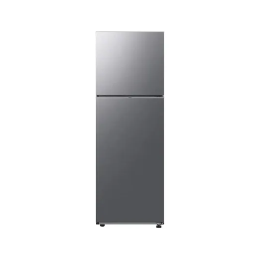
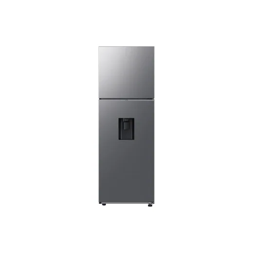
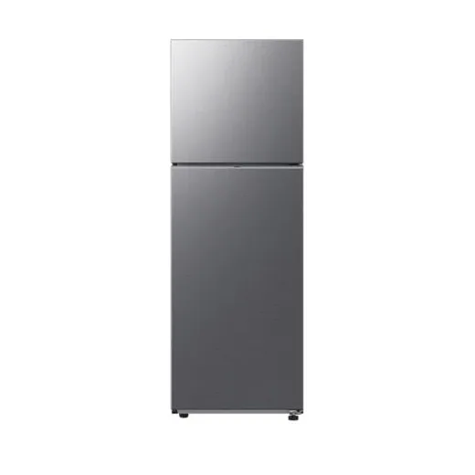
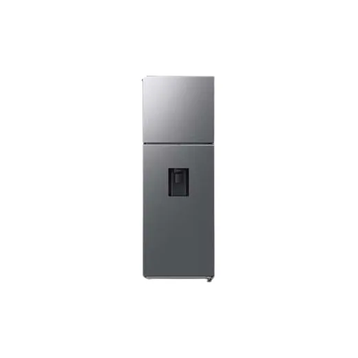
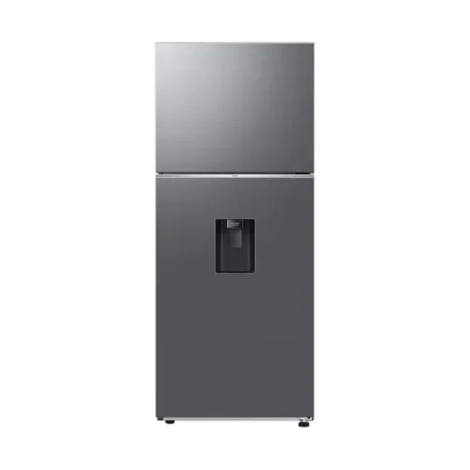
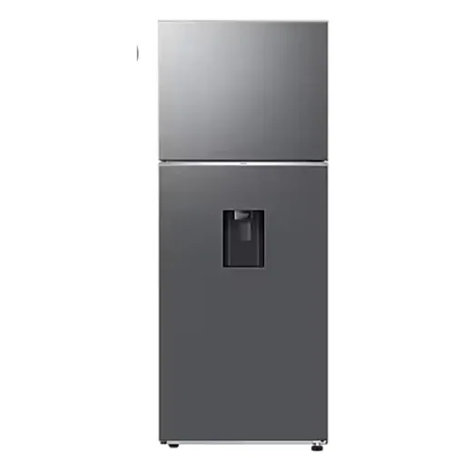
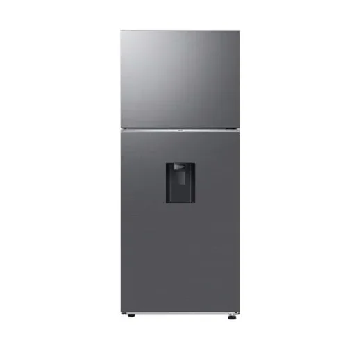
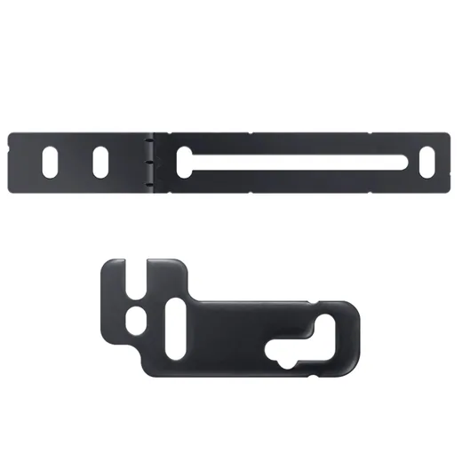

Inicio › Refrigeradoras y congeladores

Samsung · Modelo RT31DG5124S9
Refrigeradora Samsung · 11 pies · RT31DG5124S9
L 10,291.05
Más barato en Walmart · ahorras hasta L 2,705.95 frente a la tienda más cara
Precio en cada tienda
| Tienda | Precio | Antes | Disponibilidad | |
|---|---|---|---|---|
| Walmart | L 10,291.05 | Disponible | Ver en tienda › | |
| Diunsa | L 11,290 | Disponible | Ver en tienda › | |
| Gallo más Gallo | L 11,795 | Disponible | Ver en tienda › | |
| Elektra | L 12,799 | Disponible | Ver en tienda › | |
| La Curacao | L 12,997 | Disponible | Ver en tienda › |
Precios referenciales tomados de cada tienda el 21 de noviembre de 2026. El precio válido es el que muestra la tienda al comprar.
Historial de precio
Lo seguimos desde el 1 de noviembre. Precio más bajo registrado: L 10,291.05 en Walmart (21 de noviembre), igual que hoy. Cambios de precio registrados: 6.
Características
| Color | Surtido |
|---|---|
| Marca | Samsung |
| Medida de altura | 90 cm |
| Medida de ancho | 70 cm |
| Medida de peso | 30 kg aproximadamente |
| Modelo o serie del producto | LAV WA19A3353GW |
| País de Origen - Ensamblaje | Corea del sur |
| Capacidad | 19 kg |
| Diseño | Liso |
| Material | Plastico resistente |
| Uso recomendado | Cocina |
| Requiere ensamblaje | No |
| Voltaje | 110 V |
| Watts de potencia | 1000 W |
| Ahorro de energía | Si |
Descripción
La refrigeradora Samsung de 11 pies RT31DG5124S9A es una opción de buen tamaño para mantener los alimentos frescos de tu familia, sin ocupar demasiado espacio en la cocina. Samsung es una marca reconocida en electrodomésticos, lo que respalda la calidad de esta refrigeradora Samsung.
Tipo: Top Mount (Congelador superior).
Capacidad: 11 Pies cúbicos (305 Litros netos).
Color: Refined Inox (Acero inoxidable refinado).
Motor: Digital Inverter (Ahorro de energía, menor ruido y mayor durabilidad).
Sistema de Enfriamiento: All-Around Cooling (Enfriamiento uniforme en cada nivel).
Tecnología de Conservación:
No Frost: Evita la acumulación de escarcha.
Otros refrigeradoras y congeladores Samsung

Refrigeradora Samsung · 12 pies · Top Mount · RT35DG5224S9L 11,490En Diunsa
Refrigeradora Samsung · 11 pies · InverterL 11,999En Lady Lee
Refrigeradora Samsung · 11 pies · Inverter · RT31DG5224S9L 12,490En 3 tiendas · más barato en Diunsa
Refrigeradora Samsung · 14 pies · Inverter · RT38DG6224S9L 13,595En 5 tiendas · más barato en Gallo más Gallo
Refrigeradora Samsung · 15 pies · Top Mount · RT42DG6734S9L 14,647.05En 4 tiendas · más barato en Walmart
Refrigeradora Samsung · 14 pies · InverterL 14,999En Lady Lee Refrigeradora Samsung · 15 pies · InverterL 15,499En Lady Lee
Refrigeradora Samsung · 15 pies · InverterL 15,499En Lady Lee
Kit D/Ensamble Refrigeradora/Congelador · RAC07KAAGGL 3,190En Diunsa